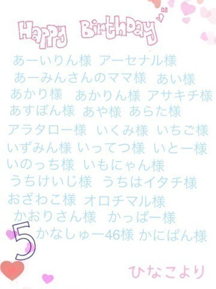
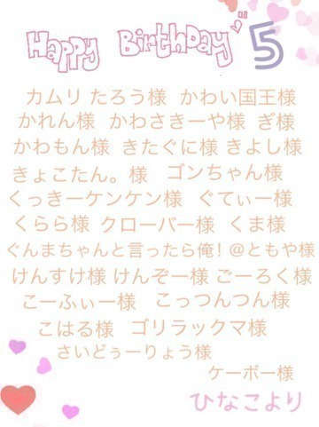
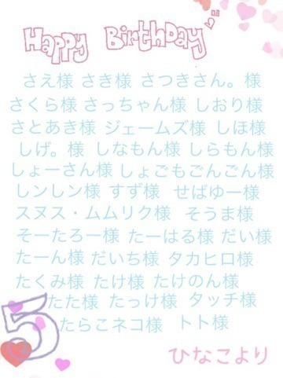
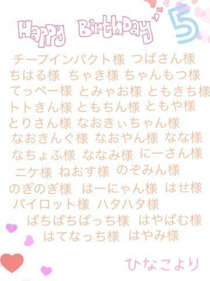
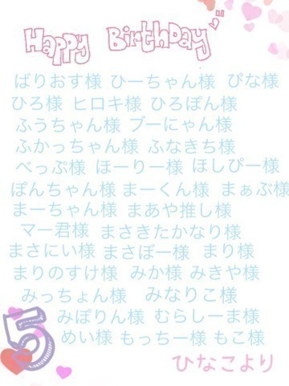
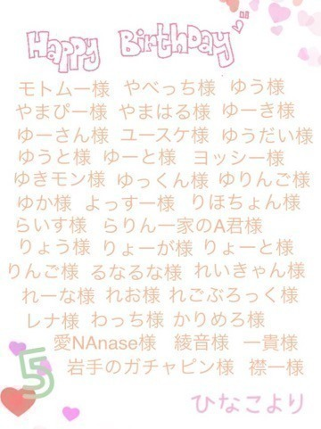
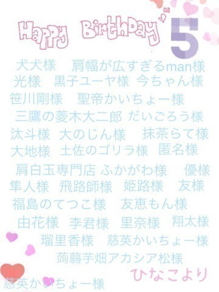
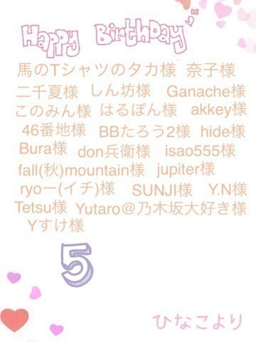
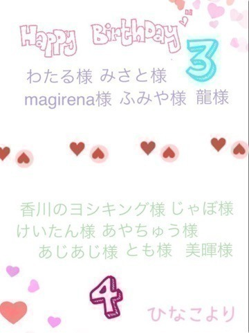

2015/0709Thu公平と不公平
みなさまこんばんは！
日奈子だよー٩(◦`꒳´◦)۶♪

衣装できたよ～♪
今日はずっと、どうやって書こうか迷っていたじょしらくのこと！
少々長くなってるけど、最後まで読んでもらえたら嬉しいです！
最初に、舞台をやる。と聞いた時、
昨年のプリンシパルのことを思い出して正直怖かったです。
舞台の上からの景色を思い出して
その景色は誰も私を見てくれていない。お客さんの席に向かって、声を発しても
その私の気持ちは誰にも受け止められず、その言葉が自分に返ってきて、プレッシャーになって。。。っていう、勝手に孤独をつくってどんどんマイナスになっていました。
今はプリンシパルを終えて
そういう経験も成長するには必要だし、気持ちも強くなりました！
それでもやっぱり、
演技という舞台が怖かったです。
じょしらくもオーディションで選ぶと聞いて、尚更怖かったです。
でも、マイナスな考え方ばかりしても何にもならないし
舞台への恐怖心を克服したい！と思いました。
そう思って挑んだオーディション。
15人の中の1人に選んでもらえて、
変わりたい！と思っていたから嬉しかったけど、
素直な気持ちを話すと
選ばれた瞬間はすごく複雑な気持ちになりました。
一つも自信なかったし、
私のどこがよくて選んでもらったのかわからなかったからです。
でも、それは自分で考えて自分で見つけていこうって思って
一生懸命になって
私なりのきぐちゃんになろうって
お稽古をしていました！
きぐちゃんは、性格もセリフも
他のキャラクターとの関係性も
私と似ているところがあって
演じながら共感するところがたくさんあって、すごく楽しんでわくわくしながら演じられました！
千秋楽を終えて言われた
川尻さんをはじめスタッフさんからの言葉をいつでも胸にとめて、また次一緒にお仕事ができる時が来た時に、成長したね～って
言ってもらえるように、これからも頑張っていきます！
じょしらくのおかげで
私は前よりも自分に自信が持てるようになって成長できました。
こんなにも素敵で
こんなにも楽しくて
一生この時が終わらないでなんて思うと思わなかったです。
でも、スタッフさんにこの舞台を終わりにしないと皆んな次の舞台にたてない。って
言われて、背筋がピリッとしました。
それだけ、じょしらくは
私の中でとても貴重で大切な経験でした。
ファンの方にも
1年でこんなに成長したんだね！って思ってもらえるように、
このことを目標の中の1つにいれて
頑張りました！
どうだったかな？。。。
もちろん、まだまだ足りてないところがたくさんあるけど
それでも少しは成長したね！って褒められたいな～(｡-_-｡)♪笑
最後の舞台が終わって
最後のMCの時に言った
1年前の舞台からの光景と
今たっている舞台からの光景は
本当に違いました。
舞台の上からお客さんの席の後ろの後ろまで鮮明にみえて、お客さん一人一人と目を合わせられた気がします！
最後に川尻さんをはじめじょしらくに携わってくださったスタッフさん方、本当にお世話になりました！
私達を受け止めてくださり
支えてくださり本当にありがとうございました！
今回のじょしらくで
歌とダンスはもっと好きになって
落語を知って落語を意識してきくようになって落語が好きになって
それから、舞台が大好きになりました！
また舞台にたてるように
日々努力していきます！！！
今度、お父さんとお母さんと舞台と落語をみに行く約束をしました♪
楽しみです(灬ºωº灬)♡
チームご
♡お泊まり会たのしみ♡
遅くなってしまいましたが
5月お誕生日の方(｡>ω<｡)♡
お誕生日おめでとうございます！！！
コメントは読ませて頂きましたが
もしかしたら書いたのに入ってない！っていう方がいるかもしれません。、。
そうだったら、5月お誕生日でした！ともう一度コメントして下さると助かります(ノ_・。)。。。








6月お誕生日の方！
このブログに6月誕生日！ってコメントお願いします！！！
それから、3月4月生まれの方で
名前を載せられていなかった方です！
ごめんね(ノ_・。)
お誕生日おめでとうございます！

6月のお誕生日会は今まで通り画像でお祝いしたいと思います！
それで、7月でこのお誕生日会が
丸2年たって3年目になるんですが、
やり方を変えようかな～と思ってます！
いろいろ、考えてるんだけど
まとまらないのでみなさんの意見が欲しいです！
こんなのがいい！
これをやってほしい！
などあったら、コメントにお願いします！
最近は、グラビアの撮影をさせてもらえることが多くてとても嬉しい♡
いろいろな雑誌に出させて頂くので、告知は次のブログでするね！
太陽ノックの個別握手会の残っている部数が7つになりました！
たくさんの方が会いに来てくださることがとても嬉しいです♡
本当にありがとうございます！
浴衣いつ着るのかとか、
あっしゅんとの天使悪魔とか
いろいろゴチャゴチャになっていると思うので、まとめます！！！
＊8月2日の名古屋では2部とも浴衣！
＊9月13日の横浜1部は関東で浴衣を着ていないということで、浴衣！
2部と3部はあっしゅんと天使悪魔やります！
＊9月22日の横浜はどの部に何を着るか決めていませんが、今のところセーラー服はどこかの部で着ます(｡・・｡)♪
＊10月18日の幕張では
ハロウィン前ということでコスプレします٩(ˊᗜˋ*)و
何を着るか決めてなくて皆さんからの意見を参考に決めようかな～って！
2種類くらいこんなの着てほしい！っていうのあったら、コメントして下さい♪
7月と11月の握手会はまだ何を着るか決めてないよ～！
何を着るかわかっていないのも、
わくわくするから当日まで秘密にしておこうかな(｡・・｡)♪
私服もいっぱい買ったの♪
握手会たのしみだな～♪
いろいろ予定決めちゃったから
遠足の前日の夜みたいな気持ち♪笑
こんな私服の系統着てほしい！とかじょしらくのキグちゃんみたいに
何かのお話のあの人に似せた格好みたいとか、アニメのあのコスプレしてほしいとかあったら、教えて下さい♪
今まで握手会は自分の好きな洋服ばっかり着てたから、いろいろ挑戦してみたいな～٩(◦`꒳´◦)۶♪
そしたら、皆さんと一緒にもっと楽しい時間過ごせるかな(｡・・｡)。。。
いつも、楽しいけど度が過ぎて
腕とか引きちぎったらごめんね(｡-∀-｡)
冗談だけどね(｡>ω<｡)♡笑
久しぶりの威嚇顔
ペアPVは未央奈と(｡>ω<｡)♡
またペアPVの話はするけど、
絶対握手会であの歌、歌って！っていう人いるよね？(｡-_-｡)
音痴だけど
別に練習しないしっ(｡-_-｡)
また、ブログ書きます٩(๑`^´๑)۶♪
おやすみなさいー(｡ρω-｡)
なつかしきエクステ！
また、いつかつけてみたいな！
季節外れのひなひつじ
2015/07/09 23:48


コメント(641)
返信も後で書くから待っててね(*´ω｀*)
がんばれ！
きいちゃん！
もうすぐ個別できいちゃんに初めて会いにいくから楽しみーー♬
きいちゃんの浴衣姿も楽しみーー(∩´∀｀)∩
最近じめじめして暑いから体調管理気をつけてねーー！！
あと、、塩アイス再開楽しみにしてるよ 笑
舞台お疲れ様ね！
今度は全ツ楽しみにしてるよー
お泊り会でも、あっしゅんとらぶ♡らぶ♡してね♡
外ハネ日奈子♡かわいいよ♡
わたし5月生まれ！30日でした(^_−)−☆
1人落語で悔しがってるきいちゃん見てこっちもグッときちゃった…
じょしらくめっちゃ楽しかったし早く映像化されないかなー(^O^)
今後も引き続き応援してます！
じょしらくほんと良かったよーヾ(＠⌒ー⌒＠)ノ
また見たくて仕方ないヾ(＠⌒ー⌒＠)ノ
DVDとかになるの期待しまくってるヾ(＠⌒ー⌒＠)ノ
誕生日お祝い名前あって嬉しかったヾ(＠⌒ー⌒＠)ノ
誕生日お祝いそんなに長いことやってるんだねヾ(＠⌒ー⌒＠)ノ
なんかいいアイデア思いついたらまたコメントするねヾ(＠⌒ー⌒＠)ノ
名古屋握手いくよーヾ(＠⌒ー⌒＠)ノ
名古屋は浴衣なんだねーヾ(＠⌒ー⌒＠)ノ楽しみヾ(＠⌒ー⌒＠)ノ
ひなでびるも会いたかったけど今回は行けないや( T_T)
また現れるのを期待してるヾ(＠⌒ー⌒＠)ノ
ブブカで塩アイス仕事あったんだねヾ(＠⌒ー⌒＠)ノ
塩アイス推しだから楽しみにしてるーヾ(＠⌒ー⌒＠)ノ
対談楽しかったー？(´∇｀)
(米･ω･)ﾉﾞ 毎日？
(米´▽`)ﾉﾞ まいぺーす！
初日と千秋楽を拝見させてもらったけど、すごくきぐちゃんになりきってて、でもひなこなとこもあって上手だなと思いました
飛鳥と仲良くなった理由がプリンシパルで、そこからお芝居に苦手意識を持ってて二人で色々話してっていうのは知ってたし、舞台終わったあとのトークでも不安だったって言ってたけど、苦手っていうのは嘘なんじゃないかなってくらいひなこワールド全開だったよ！！
苦手意識あるものを克服するのってすごく大変だから、よっぽど努力したんだね
頑張ったね！お疲れ様！！
6月誕生日なんでヨロ(･ω･)スク(｢･ω･)｢
自分は見に行けてないんだけど今回のブログを読んで去年のプリンシパルを思い出しました。
プリンシパルは4回見に行ったんだけどあの時のきいちゃんは大変だったよね…
今回じょしらくで成長したきいちゃんを見たかった(இɷஇ )
握手会行きます。
最近のきいちゃんは本当に可愛くなったな〜って思ってるよ。
乃木えいごも可愛かった（笑）
すんげーうれしい^_^
じょしらくほんとに良かったよ！
これからもがんばって！！
6月13日誕生日やったよ〜
そういえば昨年も書いてもらったなぁ、
最近は乃木坂のイベントとか
行けて無いんよなぁ〜
またいつかきぃちゃんに会いたいなぁ〜！
凌(りょう)
久々のコメントかも(笑)
特典映像のやつ見たけど
日奈子オーバーオール似合いすぎ(●ﾟ◇ﾟ●)
いつか握手会でオーバーオール着てほしいなぁ。
ゆーて最近、全然行けてないのだけれど…
じょしらくお疲れ様！
大千秋楽を見に行ったけど
凄く面白かったし泣けたし良かったよ(･∀･)
レッスンとか緊張とかで
色々と大変な思いもしたと思うけど
最後までよく頑張ったね。
最後の挨拶で
「舞台が怖かったけど、最後は大好きになった」
って聞いてなんか凄く嬉しい気持ちになったよ。
今はドラマの撮影をしてると思うのだけど
舞台で培った事を活かせると良いね！
ではではまた更新待ってます！
はちまん
きいちゃん♪♪
じょしらくホントにお疲れ様でした！
チームらしか見に行けなかったけど
ホント大変だったと思います(>_<)
後、誕生日祝ってくれて
ありがとう(*^^*)
嬉しいです(≧▽≦)
握手会次は行く予定だよぉ(^ー^)
忙しいと思うけど
ファイトーo(^o^)o
じょしらく行けなかったけど
すごく周りの方々の評判がよくって
めちゃくちゃ観たくなった…
DVDとかにならないかなぁ(∩´﹏`∩)
おつかれさまでした！
最近きいちゃんが可愛すぎてやばいんだけど
うちが行く予定のとこ完売で
なかなかきいちゃんに会えない(∩´﹏`∩)
かずみさんと仏ちゃん推しなんだけど
きっと二人が阻止してるんだろう…(笑)
いつか会いに行きます！！
でも推しは高山一実さんと永島聖羅さんなので
安心してくださいとお二人にお伝えください。(笑)
最近、仏ちゃんとの写真がないなぁ( ¯•ω•¯ )
見たいなぁ( ¯•ω•¯ )
２人の笑顔めちゃくちゃ好きなんだよね～！！
12thもいよいよ本格的に始動してきて(もうしてるか…)
大変かと思いますが！
応援してます\( ´ω` )/
おやすみちゃん～♡
じょしらくお疲れ様(^^)
千秋楽ライヴビューイングで観てたよ！
きぐちゃん可愛かったね(^ー゜)
一生懸命演じててかっこよかった
じょしらくお疲れ様でした。
自分の成長を信じてもっと自信をもって頑張りましょう。
日奈子ちゃんはちゃんと成長してるよ。
これから夏のイベントが盛りだくさんだね。
しっかりやるんだよ
日奈子ちゃん可愛いよ。
前回外ハネ見れなかったから次期待しとこ(^^♪
きいちゃんの外ハネ、プク顔待機♪
じょしらく、本当にお疲れ様でした。
俺はチームごは観られなかったけど、観に行った人の評判を聴くと、すごく好評だったよ。
特に千秋楽のきいちゃん。
「素のきいちゃんの良さと、練習したきぐちゃんの演技が良い感じにマッチしてた」そうです。
これを聞いて、行けなかったことをかなり後悔しています(´;ω;｀)笑
じょしらくが終わって、次は全国ツアーとか、秋にはプリンシパルもあるでしょう。アンダーライブもあるのかな？
落語の舞台の上で学んだことは必ず他の舞台でも役に立ちます。
俺は大学で今勉強してるけど、1年生で学んだことが4年生の今になって役に立ったりしています。
じょしらくの経験が活かされるのはすぐとは限らないと思います。でも、必ず役に立つ日が来ます。
乃木坂46としてその瞬間が観られることを期待しています\( ･ω･)/
8月には就職決まるので、秋の握手会は行きたいです。切実に。
何回も書いてるけど、2年前のきいちゃんから大きく成長した姿を見られて、俺はめちゃくちゃ嬉しいです。元気と勇気をもらえています。
これからも応援してます。
にーさん(誕生日画像ありがとう)
じょしらく、2回入ったんだけど、
回を重ねるごとに目に見えて進化(？)するきぃちゃんに感動すら覚えた(笑)
自分も頑張らなきゃなあって思いました！
あ、あと、6月生まれなので祝ってもらえると嬉しいです♪
では、次回の更新も楽しみにしてます(._.)
【6月誕生日！！】
コメントする